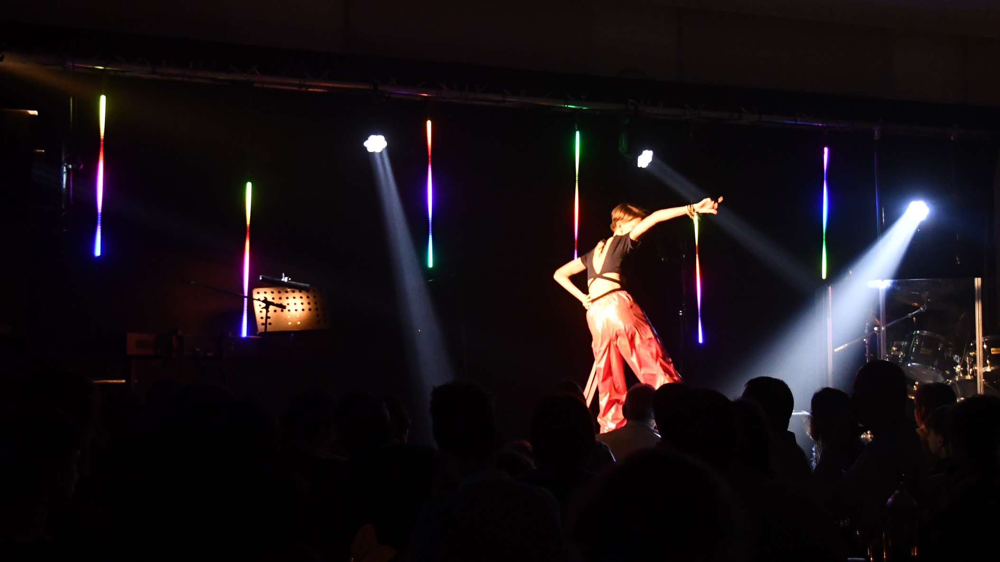
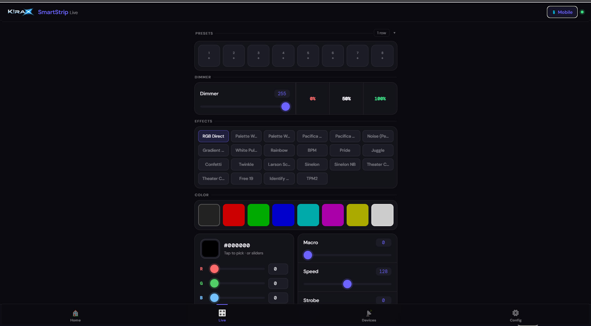
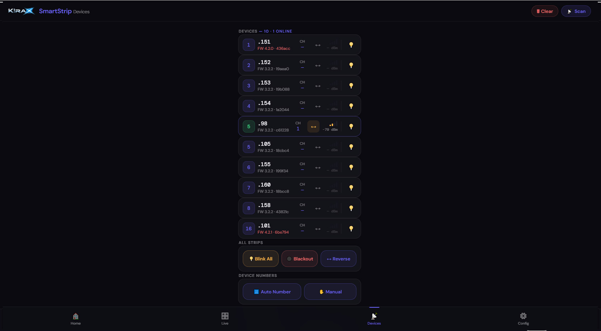
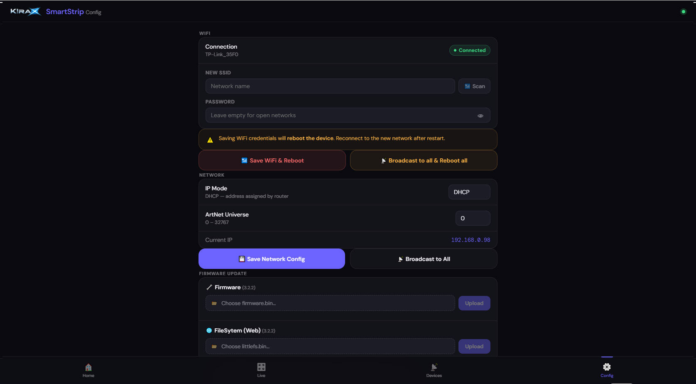

Use Case 01 — Console-driven pro operation
Context: Lighting operator works from MA/Avolites and needs deterministic control.
Solution: Use Art-Net mode for low-latency control, keep web UI available as fallback for quick local tuning.
Proof: TBD
DMX mode selection screen.

Live strip preview and controls.
Use Case 02 — Large visual wall with 2D effects
Context: Multiple strips arranged physically as a grid for immersive visuals.
Solution: Assign each strip a virtual XY position; each device computes its own pixels while receiving shared effect parameters and clock.
Proof: Add a grid layout image, a screenshot of XY config values, and a clip of wave/fire effects across the full wall.
DMX mode selection screen.

Live strip preview and controls.
Use Case 01 — Router-free stage setup
Context: Small stage, fast deployment, no local router available.
Solution: One SmartStrip acts as WiFi AP + ESP-NOW master; additional strips sync parameters and timing with near real-time behavior.
Proof: TBD

DMX mode selection screen.

Live strip preview and controls.